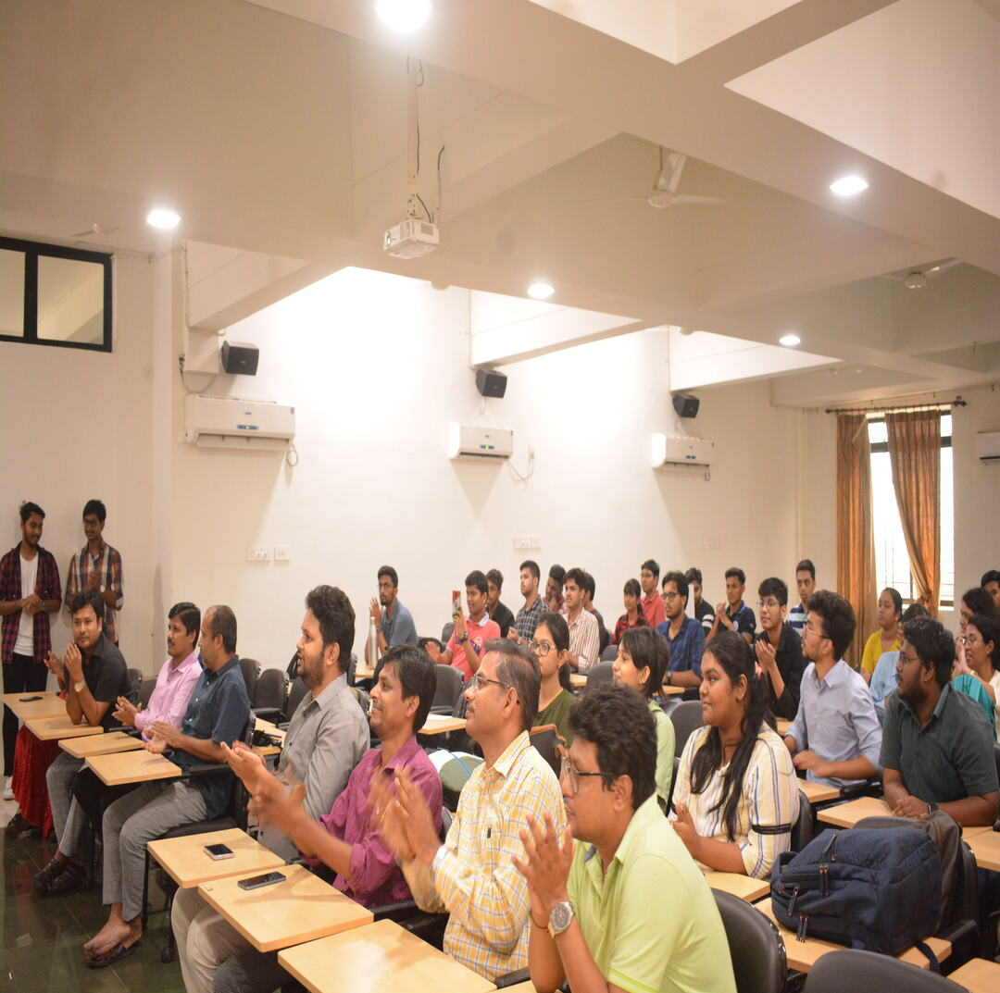

TEACHER'S DAY 2023
Organizing Teacher's Day celebrations for the beloved faculty members at the School of Computer Science and Engineering (SCSE) involved a
collaborative effort from students across all four years. The event was meticulously planned to express gratitude, admiration, and
respect towards the teachers who have played a significant role in shaping the students' academic journey.
The event was a successful one which included the following key aspects :
- Planning Committee Formation: Representatives from each year were selected to form a planning committee responsible for
orchestrating the event. This committee ensured that the celebrations were well-coordinated and meaningful.
- Preparation of Gifts and Tokens of Appreciation: Students from each year contributed to creating personalized gifts and tokens of appreciation
for the faculties showing their students' gratitude.
- Organizing Cultural Performances: Students prepared various cultural performances such as songs, dances dedicated to their professors.
These performances were not only entertaining but also served as heartfelt expressions of gratitude and respect.
- Speeches and Testimonials: Students delivered speeches and testimonials expressing their gratitude
towards the faculty members. These heartfelt messages highlighted the positive impact the teachers had on their academic
and personal development, reinforcing the significance of their role in the students' lives.
Overally, it was a day filled with joy, camaraderie, and memorable moments that strengthened the bond between
the faculties and their students.
